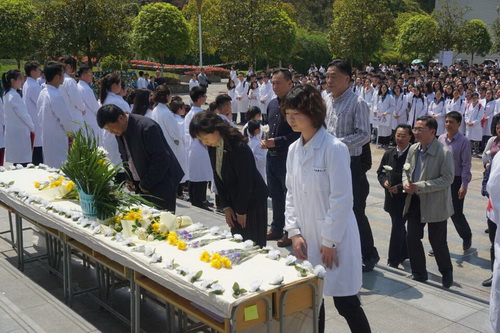
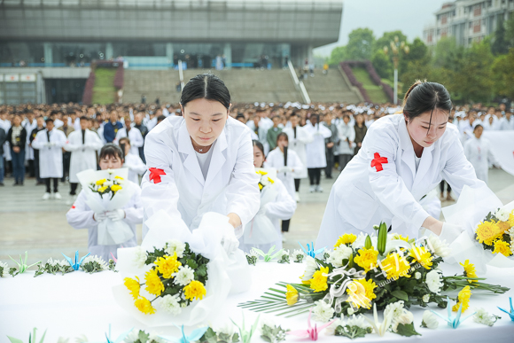
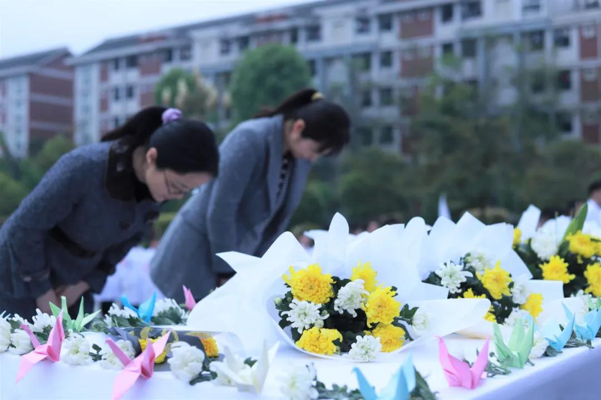
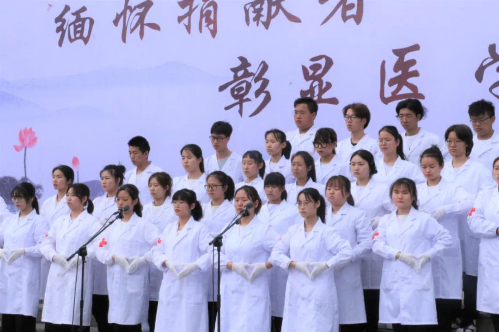
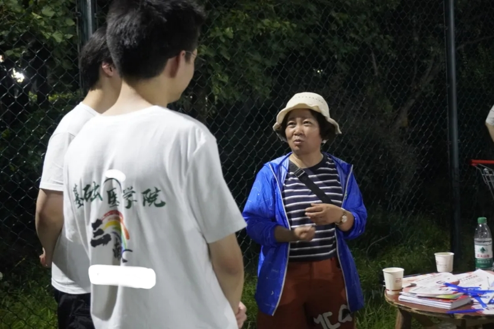
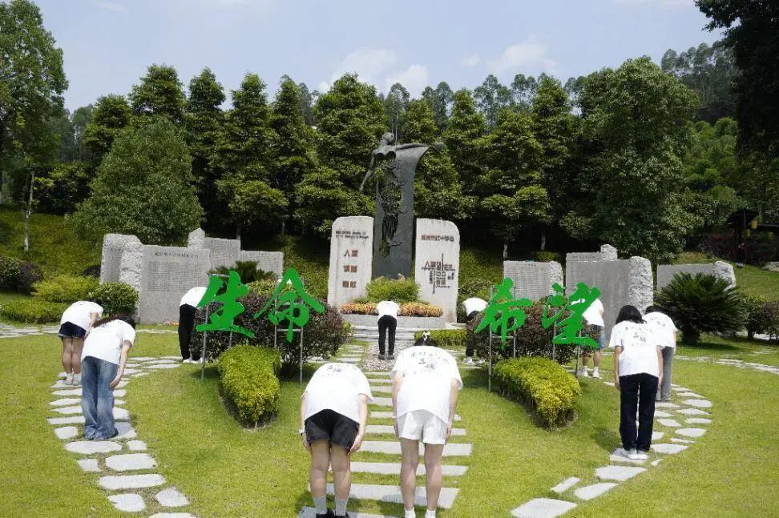
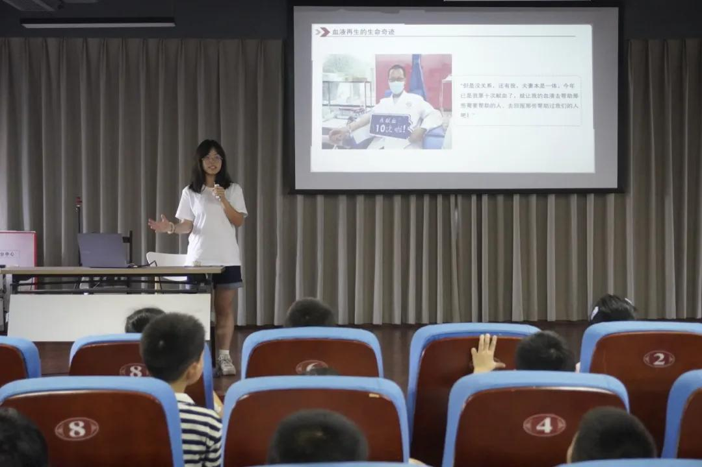
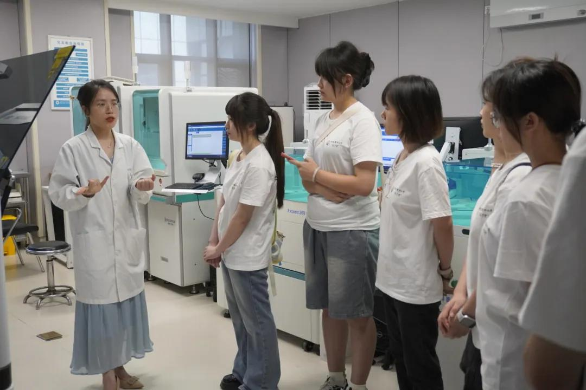
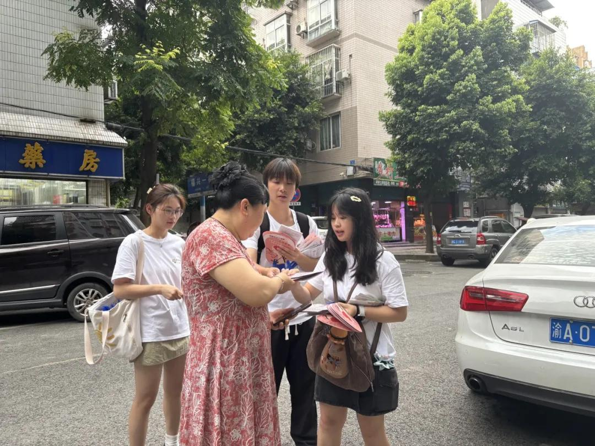

当生命走向终点，有人选择用最后的光芒照亮他人。遗体捐献，让逝者的生命在医学教育中延续，让无声的奉献成为医学生最珍贵的教科书。这不仅是对人类健康事业的贡献，更是生命价值的最高诠释——爱，永不消逝。
我是医学生
了解医学教育的重要性
我是家属
温暖陪伴，共同缅怀
我想参与纪念
缅怀捐献者，传递温暖
遗体捐献负责人模拟器
扮演全程负责人，体验完整流程
遗体捐献，让爱与希望传承
当生命走向终点，有人选择用最后的光芒照亮他人。遗体捐献，让逝者的生命在医学教育中延续，让无声的奉献成为医学生最珍贵的教科书。这不仅是对人类健康事业的贡献，更是生命价值的最高诠释——爱，永不消逝。
了解医学教育的重要性
温暖陪伴，共同缅怀
缅怀捐献者，传递温暖
扮演全程负责人，体验完整流程
扮演遗体捐献全程负责人
暂无日记，事件后可生成或点击添加
作为遗体捐献全程负责人，你的职责是协调各方资源，确保捐献过程顺利进行。请做好准备，开始你的工作。
遗体捐献，医学教育的基石
参与纪念活动，缅怀捐献者，传递温暖与希望。
遗体捐献是医学教育中不可或缺的组成部分，它为医学生提供了宝贵的学习机会，帮助他们更好地理解人体结构和功能，为未来的医疗实践打下坚实的基础。
作为医学生，我们深知每一次解剖课的机会都来之不易。每一位遗体捐献者都是我们的无声老师，他们用自己的身体为我们打开了医学知识的大门。
在解剖学习过程中，我们不仅学到了人体的结构和功能，更深刻体会到了生命的珍贵和奉献的伟大。这种感悟将伴随我们整个职业生涯，激励我们成为有爱心、有责任感的医生。
每一位遗体捐献者都值得我们最崇高的敬意。他们在生命的最后时刻，选择了以另一种方式为社会做出贡献，这种无私奉献的精神将永远铭刻在我们心中。
作为未来的医生，我们承诺将倍加珍惜每一次学习机会，努力掌握医学知识和技能，以实际行动回报捐献者的无私奉献，为人类健康事业贡献自己的力量。
如果您希望了解更多关于遗体捐献的信息，或者想分享您的学习感悟，请联系我们。让我们一起传承捐献者的精神，为医学教育事业共同努力。
温暖陪伴，共同缅怀
在这里，您可以上传逝者的照片、文字等内容，记录那些珍贵的回忆。
输入捐献者生前的话语、性格和外貌特征，我们将为您生成一封来自捐献者的个性化信件。
在这里，您可以与AI助手进行对话，倾诉思念之情，获得温暖的回应和慰藉。
"生命的意义不在于长度，而在于宽度。您的亲人用最后的奉献，为更多生命带来了希望。"
"每一次回忆都是一次重逢，每一次分享都是一次传承。您的故事将成为他人的力量。"
"我们与您同在，共同缅怀那些伟大的生命，共同传递爱的温暖。"
缅怀逝者，传递温暖
享年85岁，生前是一名教师。他说："我一生教书育人，希望死后能继续为医学教育做贡献，让更多年轻人成为好医生。"
遗言："生命的意义在于奉献，我愿意用最后的力量为社会做出贡献。"
桃李满天下，一生育英才。
死后仍奉献，医学续传承。
精神永长存，光芒照后人。
享年62岁，生前是一名护士。她说："我在医院工作了一辈子，深知医学教育的重要性，希望我的身体能帮助医学生更好地学习。"
遗言："作为一名护士，我一直致力于照顾他人，现在我希望以另一种方式继续这份使命。"
白衣天使心，护理献终身。
大爱无边界，遗体济医学。
仁心传千古，德泽润人间。
享年70岁，生前是一名工人。他说："我没读过多少书，但我知道医学研究对人类健康很重要，希望我的捐献能帮助科学家找到更多治病的方法。"
遗言："虽然我只是一个普通工人，但我希望能为社会做些有意义的事情。"
平凡岗位上，默默献青春。
临终怀大爱，遗体捐医学。
平凡见伟大，精神励后人。

这里展示了家属们分享的关于逝者的感人故事，让我们一起感受生命的温暖和力量。
重庆市2019年遗体器官捐献缅怀纪念活动在璧山区举行，重庆市人体器官捐献纪念园内千人肃立，音乐低回。来自重庆市红十字会、重庆医科大学、陆军军医大学，以及各遗体（角膜）接收单位、各器官移植医院的领导和有关负责人，遗体、角膜、器官捐献者家属，志愿者代表、医学生代表等共计两千余人齐聚纪念园，共同缅怀逝者。
阅读更多2024年，重庆市红十字会人体器官捐献工作交出了一份令人瞩目的答卷。新增遗体（角膜）捐献志愿登记2.2万余人、人体器官捐献志愿登记9000余人，见证器官捐献181例，捐献例数创历史新高。全国首家"三献"爱心屋开创性地将无偿献血、造血干细胞血样采集和遗体器官捐献登记三项公益服务整合到一个平台。
阅读更多"宁愿医学生在我身上解剖千刀万刀，不愿医生在病人身上开错一刀。"在南京，遗体捐献志愿者有一个共同的名字，叫做"捐友"，这句话，是他们的信念。1996年，南京市一批离退休老同志自发成立"捐献遗体器官志愿者之友协会"，倡导去世后做到"三不、两献、一育"。
阅读更多69岁的武汉人鲁琍华因病离世，家属兑现了她生前的最后心愿——将遗体捐献给武汉市红十字会武大医学院用于医学研究，一对珍贵的眼角膜则捐献至武汉市红十字爱尔眼库。她的善举将帮助至少两名角膜盲症患者重见光明。更令人动容的是，她的丈夫在她登记捐献时也一同签署了遗体捐献志愿者登记表。
阅读更多94岁的老党员陆凤喜女士与63岁的姜铭璋先生，于同日相继完成遗体捐献，将身躯献予祖国医学事业。拥有近70年党龄的陆凤喜女士生前是佳木斯铁路医院医务工作者，一生以医者仁心践行共产党员的初心使命。她说："自愿捐献遗体，供标本研究与科学探索，为推动祖国医学事业进步贡献力量，这是一名老共产党员的最大心愿。"
阅读更多山东无棣县57岁的徐沛琦因病离世，遵照遗愿，自愿将遗体无偿捐献给滨州医学院，成为无棣县首位遗体捐献者。她出生教师世家，曾任记者、人大代表、文联主席。面对死亡，她提前写下遗嘱："我读书、工作、写稿子，都是为了让别人活得更好；现在换一种方式继续活，挺好的。"
阅读更多首都医科大学附属北京佑安医院妇产科原主任、退休专家杨虹走完了她64年的人生旅程。根据她的遗愿，将自己的遗体无偿捐献给首都医科大学，奉献给医学教育和医学研究事业。从医四十年，她致力于妊娠合并各类传染性疾病的诊断、治疗及危重症抢救。她说："作为一名医生，我要用最后的力量推动医学教育和医学研究的发展。"
阅读更多致敬无言良师，传承生命大爱
聆听无言良师的生命故事，感悟奉献的真谛
张老师一生教书育人，晚年选择捐献遗体继续为医学教育事业贡献力量。
教育工作者李护士长在医疗战线工作30年，深知医学教育的重要性，临终前叮嘱家人完成捐献。
医疗工作者王大爷不识一字却懂得大爱，他说："我没读过书，但让娃娃们学医，也算我做点贡献。"
普通农民陈教授一生致力于癌症研究，去世后将遗体捐献用于医学研究，继续完成未竟的事业。
科研工作者刘老将军戎马一生，晚年仍想着为国家和人民做最后一点贡献。
退伍军人赵妈妈独自抚养三个孩子长大，临终前唯一的愿望就是让医学进步能够帮助更多家庭。
伟大母亲了解遗体捐献对医学教育的重要价值
遗体捐献为医学生提供了最真实的学习材料，是理解人体结构的唯一途径。没有捐献者，就没有合格的医生。
通过解剖学习，医学生不仅掌握知识，更学会了尊重生命、感恩奉献，这是医者仁心的基础。
捐献的遗体用于医学研究，帮助科学家攻克疾病，最终造福更多患者。每一份捐献都是生命的延续。
扎实的解剖知识是临床技能的基础。捐献者帮助培养了一代又一代优秀的医疗工作者。
向伟大的遗体捐献者致以最崇高的敬意
"生如夏花之绚烂"
"死如秋叶之静美"
如果您也愿意成为遗体捐献志愿者，为医学教育事业贡献力量，请联系当地红十字会或相关机构。
📞 咨询热线：当地红十字会
📝 登记方式：线上申请或现场登记
参与纪念活动，缅怀捐献者
用简洁而深情的三行文字，表达对遗体捐献者的敬意和缅怀。
三行祭文是一种简洁而有力的表达方式，通过三行文字传递对逝者的思念和敬意。我们邀请所有医学生参与这个活动，用最真挚的情感，为那些无声的老师写下祭文。
全年开放，随时可投稿
您用无声的奉献，
为我们打开医学的大门，
您的精神将永远铭刻在我们心中。
——医学生代表
生命的最后一程，
您选择了照亮他人的路，
您是我们最尊敬的老师。
——医学生代表
献血、献造血干细胞、献遗体和人体器官——用生命接力生命，用爱心传递希望。
慎终追远，缅怀无言良师，传承医者仁心。
活动介绍：每年清明节，我们组织医学生前往遗体捐献者纪念园，举行庄重的祭拜仪式。通过献花、默哀、朗诵祭文等形式，表达对无言良师的感恩与怀念。
活动内容：🌸 敬献花篮与鲜花 | 🕯️ 集体默哀 | 📜 朗诵三行祭文 | 🎵 合唱纪念歌曲 | ✍️ 书写心愿卡
活动时间：每年清明节前后，具体时间提前一周通知

🖼️图片加载失败';">
🖼️图片加载失败';">
🖼️图片加载失败';">
🖼️图片加载失败';">致敬捐献者，传递生命大爱，弘扬人道精神。
活动介绍：联合中国红十字会举办遗体与人体器官捐献缅怀纪念活动，向所有捐献者表达崇高敬意。通过庄重的纪念仪式，缅怀那些用生命延续生命的伟大捐献者。
活动内容：❤️ 捐献者家属慰问 | 🕯️ 烛光缅怀仪式 | 📜 诵读捐献者名录 | 🌹 敬献鲜花花篮 | 🤝 捐献志愿者登记咨询
活动时间：每年清明节期间，具体时间请关注红十字会官方通知
深入一线，亲身体验，用行动诠释医者仁心。
活动介绍：组织医学生前往红十字会、医学院、纪念园等机构开展暑期社会实践，深入了解三献工作的全流程，参与志愿服务，撰写实践报告。
实践内容：🏥 参观学习 | 🎗️ 志愿服务 | 📝 调研访谈 | 📊 报告撰写

🖼️图片加载失败
🖼️图片加载失败
🖼️图片加载失败
🖼️图片加载失败
🖼️图片加载失败用画笔描绘人体之美，以艺术诠释医学之魂。
解剖绘画大赛是医学生展示艺术才华与专业知识的舞台。参赛者通过精细的绘画，展现人体结构的精妙与生命的壮美，向无言良师致敬。
具体日期请关注通知
友站链接等更多资源
以上资源均来自官方渠道和友好合作网站，感谢各机构对遗体捐献公益事业的支持。
如有任何建议或发现链接失效，请联系我们。